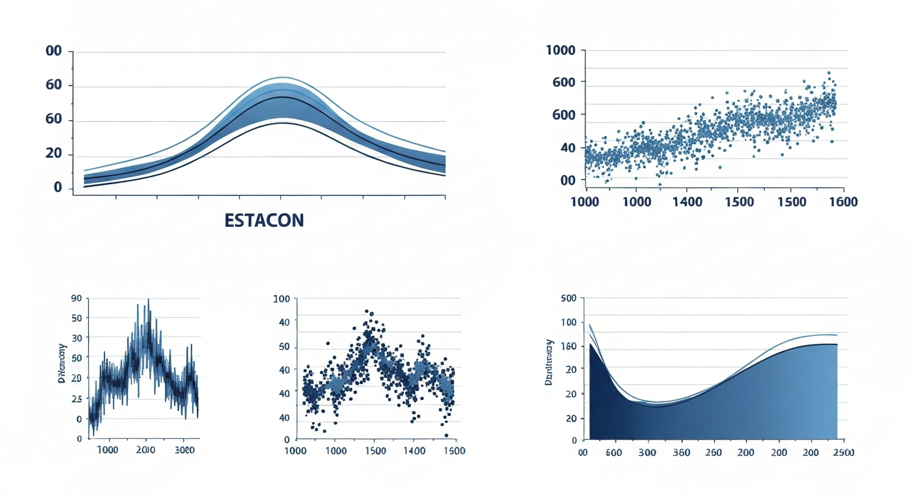

The Author
Rutgers University senior (B.A. Genetics, Minor in Data Science, GPA 3.89) with active roles in clinical research, statistical genetics, and radiosurgery outcomes analysis. Working across Morristown Medical Center's Department of Surgery, Jersey Shore University Medical Center's Radiation Oncology division, and Rutgers' own statistical genetics lab, Akil bridges wet-lab technique with rigorous quantitative modeling.
His work spans building predictive regression models for radiosurgery scheduling, developing the open-source genmixr R package for genetic power analysis, and producing first-author peer-reviewed publications. Every project is grounded in clinical data — TQIP, NSQIP, ZAP-X treatment records — and aimed at improving patient outcomes and resource utilization.
GitHub: github.com/akilanthony19
Research Focus
Regression and predictive modeling for ZAP-X stereotactic radiosurgery scheduling and treatment duration, reducing clinical scheduling errors and improving throughput across 200+ patient cohorts.

Linear, logistic, and Cox proportional-hazard models applied to surgical and oncology datasets. Specialty in feature engineering, model validation, and producing publication-ready statistical reports with ggplot2.
Development of the genmixr R package for power and sample-size estimation in genetic association studies, alongside trauma and surgical outcomes analysis using TQIP and NSQIP national datasets.
Peer-Reviewed Work
Developed a ridge regression predictive model for stereotactic radiosurgery treatment duration using the ZAP-X gyroscopic system, analyzing 200 patient cases at Jersey Shore University Medical Center. The study identified that setup time and gantry time are the most influential variables affecting treatment duration, followed by number of beams, isocenters, dose, and target count. The model substantially outperforms the ZAP-X system's built-in duration estimates, which were found to consistently underestimate actual treatment time.
A prospective clinical investigation examining 200 patients who received ZAP-X gyroscopic stereotactic radiosurgery for 374 intracranial lesions between October 2023 and January 2025. The study evaluated workflow feasibility, dosimetric accuracy, patient safety, and clinical outcomes across a diverse case mix including brain metastases, meningiomas, trigeminal neuralgia, and acoustic neuromas. Average patient satisfaction ratings of 4.7–5.0 on a 5-point scale were reported.
Background
Technical Expertise
R (advanced), Python, SQL (basic)
Linear & logistic regression, Cox models, survival analysis, predictive modeling
ggplot2, R Markdown, statistical reporting
SPSS, Excel, Git, R Markdown
Data cleaning, feature engineering, model validation, TQIP/NSQIP datasets
Aresty RURJ Peer Reviewer · Red Cross Adult First Aid / CPR / AED